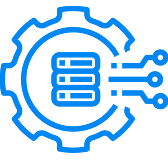

Backend app development for banking
Java 21, Kubernetes, Docker, Elasticsearch, and Kafka Connect supported faster, scalable financial search.
Read the case studyPrepared for NAM Info Inc
A short proposal for turning active backend hiring into repeatable delivery strength across NAM's data and AI client work.
Saw NAM is hiring a Java Backend Developer with Spring Boot, microservices, Docker, Kubernetes, Oracle/MongoDB, TeamCity, Jira, and Git. That points to platform delivery load, not simple staffing.

Java services, data flows, DevOps, and QA for repeatable pilots.
NAM is moving from talent-led services into AI and data solutions, with Inferyx used for enterprise data management and industry workflows. The Java backend role says the near-term need is stronger service delivery for APIs, microservices, and cloud-ready data flows. That work has to support demo requests, client pilots, and governed data across cloud and hybrid systems. If the backend bench grows slowly, productized offers can turn back into custom project work. That can slow Balaji's scale plan and stretch senior architects thin.
NAM's WordPress and Elementor pages carry large image and script payloads. Clean the strategy-call path before more campaign traffic arrives.
Turn the Java role stack into a reusable Spring Boot reference service with API contracts, CI checks, and deploy templates.
A dedicated Elinext squad works under NAM's product or technology lead for a six-week pilot with weekly demos.
Map the Enterprise Data Management buyer path, demo form, and backend touchpoints tied to Inferyx-based client pilots.
Build one Spring Boot reference service with REST contracts, database adapters, Docker, and Kubernetes deployment files.
Add CI checks, API tests, logging, and rollback steps for repeatable client launches.
Document playbooks for banking, automotive, and logistics data pilots so new engineers onboard faster.
Elinext is a full-cycle software development company, active since 1997, with about 700 in-house specialists and no freelancers. We build backend, frontend, QA, AI/ML, data, and DevOps teams for clients across the US, Europe, and Asia. The fit here is enterprise delivery: Java, Python, React, Angular, QA, and managed teams that can work under NAM's product lead. Elinext holds ISO 9001 and ISO 27001 certifications. That makes us useful for a focused pilot that must support trust, speed, and repeatable delivery.
Java 21, Kubernetes, Docker, Elasticsearch, and Kafka Connect supported faster, scalable financial search.
Read the case study
Java, Spring Boot, and Angular helped process high-volume dealer, customer, and sales data.
Read the case study